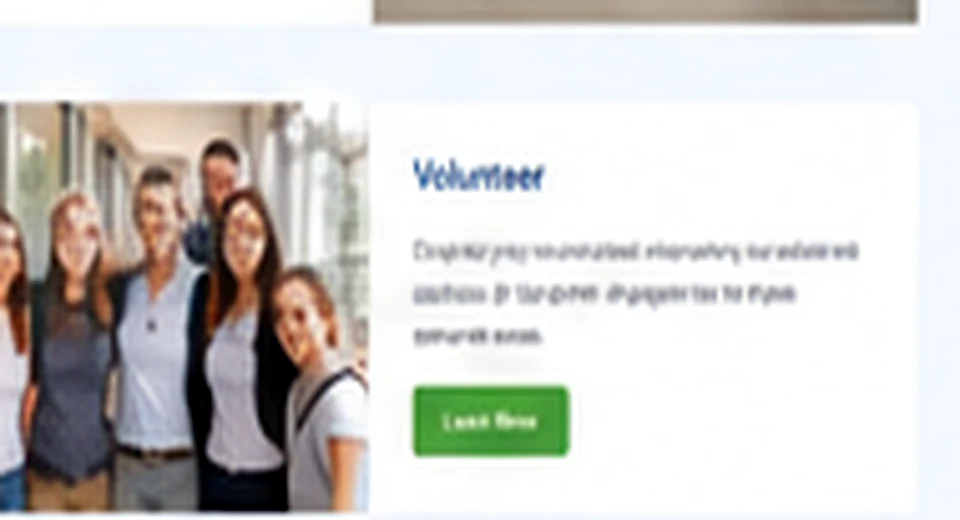
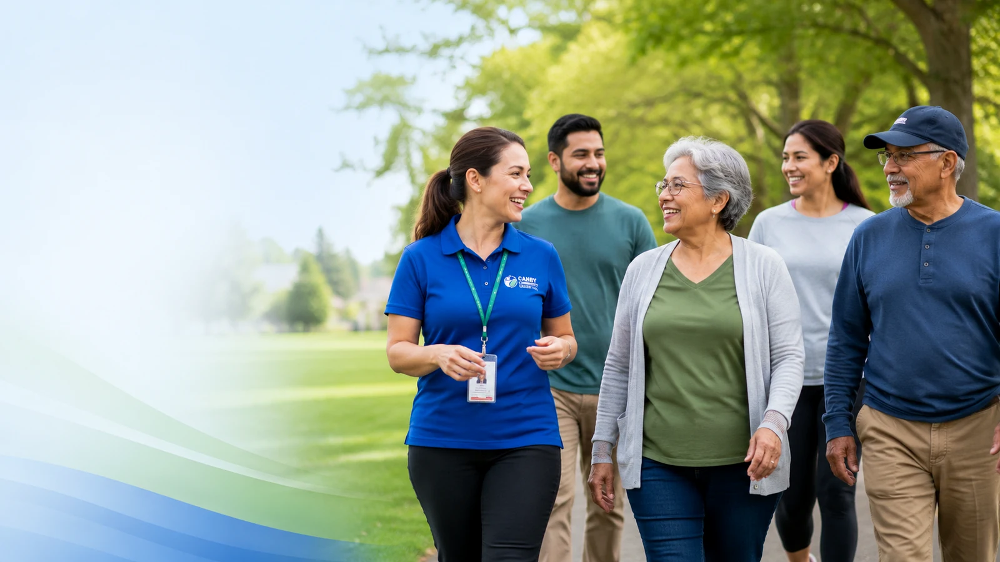

Servicios
Revise categorías de atención y límites claros.
Ver serviciosCanby Community Clinic, anteriormente Pura Vida Community Clinic, ofrece información para que residentes de Reseda y comunidades cercanas puedan confirmar servicios, prepararse para una visita y entender los próximos pasos. Llame para verificar disponibilidad y elegibilidad.


La clínica debe confirmar por teléfono el servicio, la cita, la elegibilidad, el costo esperado y si se requiere una prueba o referencia externa.
Revise categorías de atención y límites claros.
Ver serviciosQué traer y cómo solicitar una llamada.
Información de citasArtículos de salud, privacidad y preparación.
Ver recursos